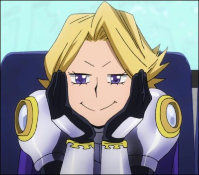

Anime Qcm
Ceci est un QCM sur fairytail !
Connaissez-vous fairytail sur le bout des doigts ?
A vous de jouer pour avoir 10/10 :D .
Pour n'avoir aucun spoil, vous n'aurez pas les réponses a la fin du quizz.
Commencez le test maintenant !
Quel est le surnom du héros ?
Deku
Izuku
Haiku
Midoriya
Quel est le nom de code d'Ochako Uraraka ?
Gravity
Uravity
Ochako
Gravity 0
Quel est l'Alter de Mei Hatsume ?
Cible
Création
Zoom
Invention
Comment Shouto Todoroki a-t-il reçu sa cicatrice ?
Son père l'a brûlé avec son Alter
Sa mère l'a brûlé avec de l'eau bouillante
Il s'est brûlé lui-même en découvrant son Alter
Il a sauté dans un feu

Quelle est la soi-disant nationalité de Yuga ?
Japonaise
Italienne
Chinoise
Française
Quelle est la particularité de Denki Kaminari ?
Il se teint les cheveux
Son Alter est surpuissant
Son Alter le rend débile
Il est secrètement amoureux de Kyoka
Qui est le professeur principal de la seconde B ?
Vlad King
Eraser Head
Midnight
Snipe
Quand est-il plus facile à Fumikage de contrôler Dark Shadow ?
Quand il fait sombre
Quand il fait jour
Quand il est en pleine forme
Quand il est fatigué
Quel est le vrai nom d'All Might ?
Olo Maito
Yuga Aoyama
AbdelKarim Karkaoui
Toshinori Yagi
Comment se nomme la sœur de Shoto ?
Fuyumi Todoroki
Fuyutsuki Todoroki
Ibara Todoroki
Il n'en a pas